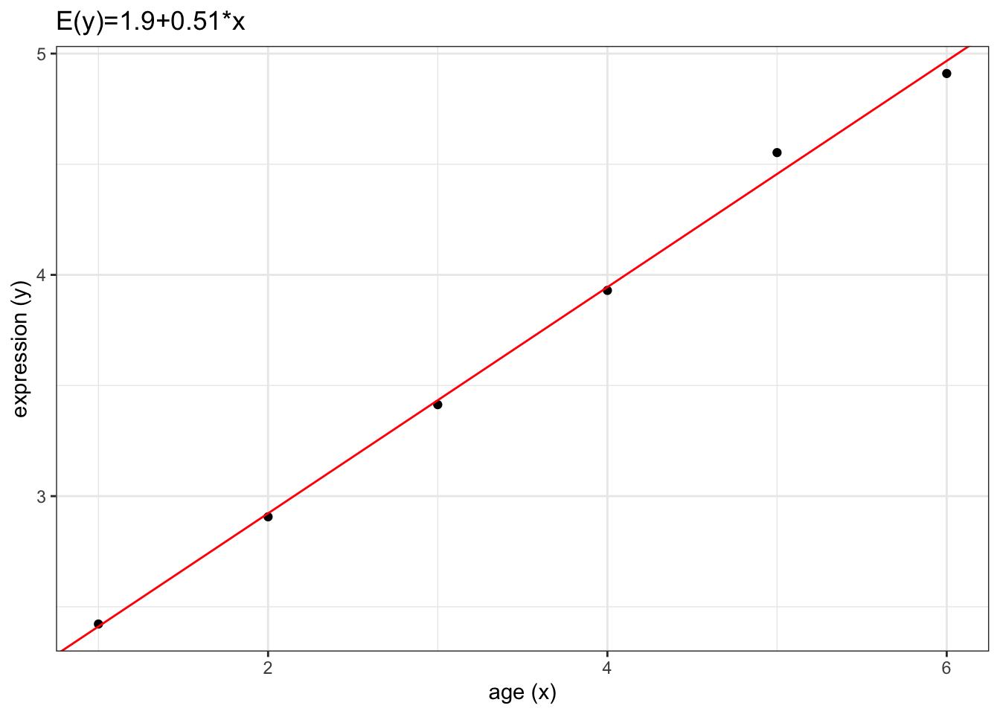
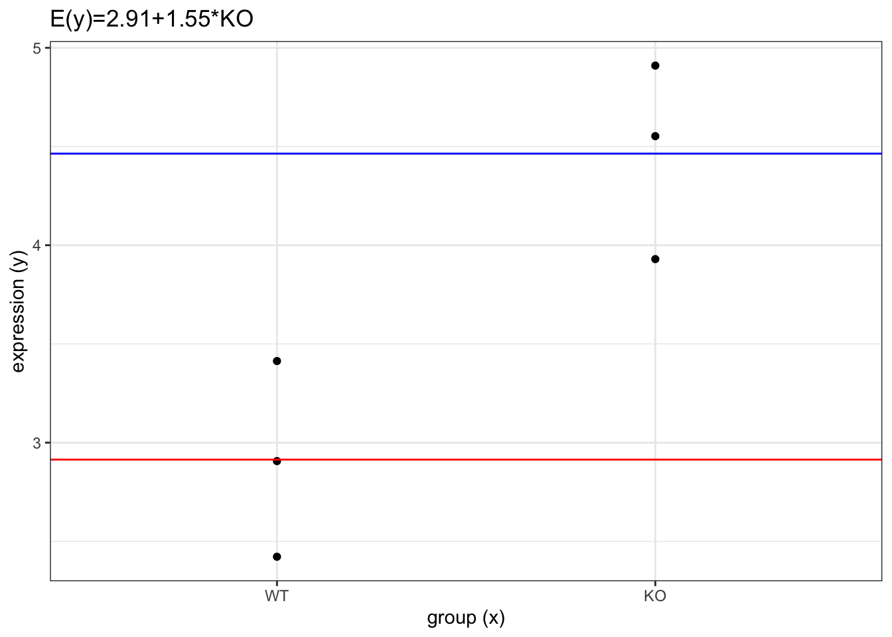
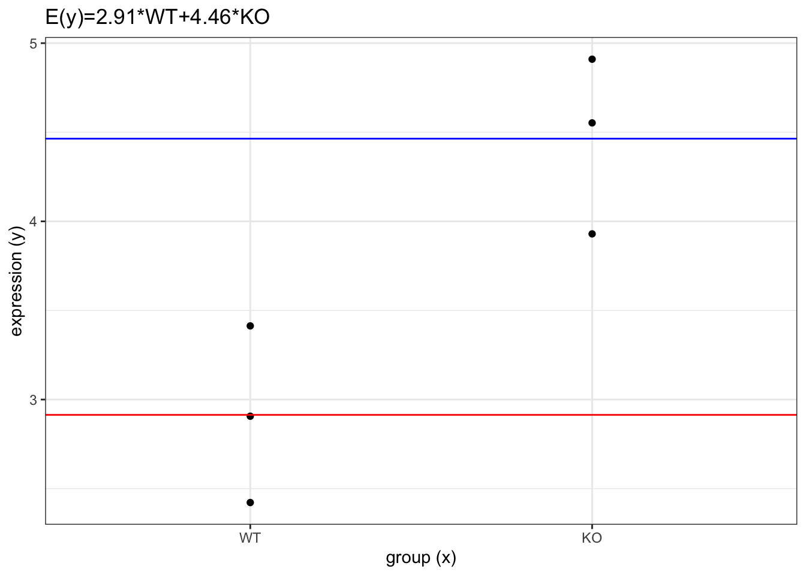

library(tidyverse)
library(magrittr)
library(broom)
library(marginaleffects)
library(limma)
theme_set(theme_bw())
set.seed(1969)A guide to creating design matrices for gene expression experiments
References
A guide to creating design matrices for gene expression experiments (https://f1000research.com/articles/9-1444/v1)
RNA-seq analysis is easy as 1-2-3 with limma, Glimma and edgeR (https://f1000research.com/articles/5-1408/v3)
XXX
mouse = paste0("MOUSE", 1:6)
age = c(1,2,3,4,5,6)
expression = 2 + 0.5 * age + rnorm(n=6, sd=0.1)
data = tibble(mouse, expression, age)
data(mm = model.matrix(expression ~ 1 + age)) (Intercept) age
1 1 1
2 1 2
3 1 3
4 1 4
5 1 5
6 1 6
attr(,"assign")
[1] 0 1fit = lm(expression ~ 1 + age)
tidy(fit)model.name = paste0("E(y)=", round(fit$coef[1],2), "+", round(fit$coef[2],2), "*x")
ggplot(data, aes(y = expression, x = age)) +
geom_point() +
geom_abline(intercept = fit$coef[1],
slope = fit$coef[2],
color = "red") +
labs(title = model.name,
y = "expression (y)",
x = "age (x)")
group = fct_relevel(rep(c("WT", "KO"), each = 3), "WT")
data = tibble(mouse, expression, group)
data(mm = model.matrix(expression ~ 1 + group)) (Intercept) groupKO
1 1 0
2 1 0
3 1 0
4 1 1
5 1 1
6 1 1
attr(,"assign")
[1] 0 1
attr(,"contrasts")
attr(,"contrasts")$group
[1] "contr.treatment"fit = lm(expression ~ 1 + group)
tidy(fit)model.name = paste0("E(y)=", round(fit$coef[1],2), "+", round(fit$coef[2],2), "*KO")
ggplot(data, aes(y = expression, x = group)) +
geom_point() +
geom_hline(yintercept = fit$coef[1],
color = "red") +
geom_hline(yintercept = fit$coef[1] + fit$coef[2],
color = "blue") +
labs(title = model.name,
y = "expression (y)",
x = "group (x)")
(mm = model.matrix(expression ~ 0 + group)) groupWT groupKO
1 1 0
2 1 0
3 1 0
4 0 1
5 0 1
6 0 1
attr(,"assign")
[1] 1 1
attr(,"contrasts")
attr(,"contrasts")$group
[1] "contr.treatment"fit = lm(expression ~ 0 + group)
tidy(fit)model.name = paste0("E(y)=", round(fit$coef[1],2), "*WT", "+", round(fit$coef[2],2), "*KO")
ggplot(data, aes(y = expression, x = group)) +
geom_point() +
geom_hline(yintercept = fit$coef[1],
color = "red") +
geom_hline(yintercept = fit$coef[2],
color = "blue") +
labs(title = model.name,
y = "expression (y)",
x = "group (x)")
makeContrasts(groupKO - groupWT, levels=colnames(mm)) Contrasts
Levels groupKO - groupWT
groupWT -1
groupKO 1treatment = as_factor(rep(c("CTRL", "A", "B", "C"), each=3))
n = length(treatment)
expression = rep(c(0,1,2,4), each=3) + 1
expression = expression + rnorm(n, sd=0.1)
mouse = paste0("MOUSE", 1:n)
data = tibble(expression, mouse, treatment)
data(mm = model.matrix(expression ~ 1 + treatment)) (Intercept) treatmentA treatmentB treatmentC
1 1 0 0 0
2 1 0 0 0
3 1 0 0 0
4 1 1 0 0
5 1 1 0 0
6 1 1 0 0
7 1 0 1 0
8 1 0 1 0
9 1 0 1 0
10 1 0 0 1
11 1 0 0 1
12 1 0 0 1
attr(,"assign")
[1] 0 1 1 1
attr(,"contrasts")
attr(,"contrasts")$treatment
[1] "contr.treatment"fit = lm(expression ~ 1 + treatment)
tidy(fit)(mm = model.matrix(expression ~ 0 + treatment)) treatmentCTRL treatmentA treatmentB treatmentC
1 1 0 0 0
2 1 0 0 0
3 1 0 0 0
4 0 1 0 0
5 0 1 0 0
6 0 1 0 0
7 0 0 1 0
8 0 0 1 0
9 0 0 1 0
10 0 0 0 1
11 0 0 0 1
12 0 0 0 1
attr(,"assign")
[1] 1 1 1 1
attr(,"contrasts")
attr(,"contrasts")$treatment
[1] "contr.treatment"fit = lm(expression ~ 0 + treatment)
tidy(fit)sessionInfo()R version 4.2.2 (2022-10-31)
Platform: x86_64-apple-darwin17.0 (64-bit)
Running under: macOS Big Sur ... 10.16
Matrix products: default
BLAS: /Library/Frameworks/R.framework/Versions/4.2/Resources/lib/libRblas.0.dylib
LAPACK: /Library/Frameworks/R.framework/Versions/4.2/Resources/lib/libRlapack.dylib
locale:
[1] en_US.UTF-8/en_US.UTF-8/en_US.UTF-8/C/en_US.UTF-8/en_US.UTF-8
attached base packages:
[1] stats graphics grDevices utils datasets methods base
other attached packages:
[1] limma_3.54.2 marginaleffects_0.11.0 broom_1.0.4
[4] magrittr_2.0.3 lubridate_1.9.2 forcats_1.0.0
[7] stringr_1.5.0 dplyr_1.1.0 purrr_1.0.1
[10] readr_2.1.4 tidyr_1.3.0 tibble_3.2.0
[13] ggplot2_3.4.1 tidyverse_2.0.0
loaded via a namespace (and not attached):
[1] Rcpp_1.0.10 compiler_4.2.2 pillar_1.8.1 tools_4.2.2
[5] digest_0.6.31 timechange_0.2.0 jsonlite_1.8.4 evaluate_0.20
[9] lifecycle_1.0.3 gtable_0.3.1 pkgconfig_2.0.3 rlang_1.1.0
[13] cli_3.6.0 rstudioapi_0.14 yaml_2.3.7 xfun_0.37
[17] fastmap_1.1.1 withr_2.5.0 knitr_1.42 generics_0.1.3
[21] vctrs_0.5.2 htmlwidgets_1.6.1 hms_1.1.2 grid_4.2.2
[25] tidyselect_1.2.0 data.table_1.14.8 glue_1.6.2 R6_2.5.1
[29] fansi_1.0.4 rmarkdown_2.20 farver_2.1.1 tzdb_0.3.0
[33] backports_1.4.1 ellipsis_0.3.2 scales_1.2.1 htmltools_0.5.4
[37] colorspace_2.1-0 labeling_0.4.2 utf8_1.2.3 stringi_1.7.12
[41] munsell_0.5.0